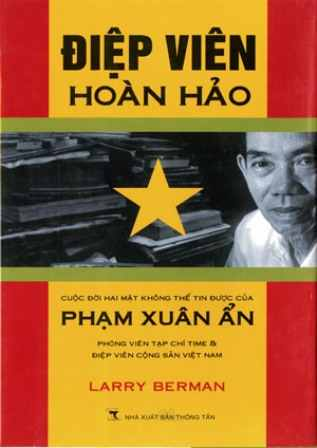

Cùng với cây đa, bến nước, sân đình, cổng làng là biểu tượng của rất nhiều làng quê đồng bằng Bắc Bộ. Mỗi cổng làng đều có một nét văn hóa riêng tuỳ theo đặc điểm của làng đó. Cổng làng ra đời từ rất sớm, gắn liền với sự hình thành và phát triển của làng. Kiến trúc cổng làng xưa không cầu kỳ, phô trương mà chỉ nhằm khẳng định chỗ đứng của mình trong khoảng không gian của làng quê vùng đồng bằng Bắc Bộ. Vẻ đẹp của cổng làng gắn với nền văn minh lúa nước, mang tính phác họa và gợi nên những ước vọng của cộng đồng từ đời này qua đời khác. Phía sau mỗi cánh cổng làng Việt ấy, xưa nay vẫn là sự kết nối cộng đồng gia tộc, là những nét chung về phong tục, tập quán, những nét văn hoá riêng biệt. Cánh cổng làng dù hiện hữu hay vô hình vẫn là nỗi nhớ là hình ảnh mang tiếng quê hương của những người con xa xứ. Cổng làng không chỉ tạo nên hồn quê đất Việt mà qua dáng vẻ kiến trúc còn thể hiện chiều sâu văn hóa mỗi ngôi làng.  Đáp ứng nhu cầu tìm hiểu về văn hoá lịch sử và góp phần giữ gìn bản sắc văn hoá cổ truyền của dân tộc, NXB Văn hoá thông tin đã phát hành cuốn sách "Cổng làng Hà Nội xưa và nay" do tác giả Vũ Kiêm Ninh - Hội văn nghệ dân gian chủ biên. Cuốn sách dày hơn 300 trang với 109 bức ảnh màu về cổng làng Hà Nội đã đặc tả rõ nét đẹp văn hóa của chiếc cổng làng và tác giả cũng hy vọng sẽ đánh thức được tinh thần giữ lấy hồn quê của người Hà Nội hôm nay. Sau phần “Tổng quan về cổng làng Hà Nội”, ở mỗi cổng làng tác giả đều “mô tả khái quát” về lịch sử và kiến trúc, tên cổng và câu đối đắp tại các cổng này. 109 ảnh mầu giúp người đọc dễ dàng hình dung dáng vẻ mỗi cổng làng. Cổng Ô Quan Chưởng ở phường Đông Hà rêu phong cổ kính; cổng phố Hàng Ngang có tên Việt Đông nằm trên đất phường Diên Hưng, tổng Hậu Túc, huyện Thọ Xương với sinh hoạt và trang phục của người Hà Nội hơn một thế kỷ trước. Sinh ra và lớn lên ở làng Bưởi, nơi có nhiều chiếc cổng làng to đẹp, ông - Vũ Kiêm Ninh - đã có một tuổi thơ ngọt ngào với những trò tinh nghịch. Ông theo nghề điện ảnh, nhưng lại có tình yêu và niềm đam mê đến lạ lùng dành cho những vóc dáng cổng làng. Và đã hơn 10 năm, ngày nào ông cũng đạp xe đi hơn 50 cây số đến nghiên cứu từng cổng làng Hà Nội. Ông chụp ảnh, ghi lại cẩn thận từng chữ Hán, Nôm trên cổng. Mỗi ngôi làng ông đi qua là một sự kỳ thú về một câu chuyện riêng. Chúng mở ra cho ông ý tưởng của một cuốn sách về cổng làng Hà Nội. Cho đến giờ, mỗi lần nhắc đến Vũ Kiêm Ninh, người ta lại liên tưởng ngay đến những chiếc cổng làng. Khi xưa, ông cha chúng ta xây dựng cổng làng đều gửi gắn lời nhắn với thế hệ mai sau qua kiểu dáng, nét chữ, ý tứ ở mỗi dòng câu đối. Tiếc rằng trong thời gian qua, chúng ta đã vội vàng “đô thị hóa” phá bỏ nhiều cổng làng nhưng có biết đâu rằng chúng ta đã gây nên sự mất mát bơ vơ khi thiếu vắng một hình ảnh quen thân đã bao đời. Thế là mất đi cái gốc của làng. Trong tâm thức dân gia Việt Nam, mỗi khi nhắc đến quê hương, không ai mà không nhớ đến hình ảnh Cổng làng với một ý nghĩa thiêng liêng. Lặng lẽ nơi đầu ngõ bên những mảng tường loang, cổng làng chứng kiến bao thăng trầm và dường như nó biểu trưng cho sự uy nghi, nền nếp riêng của làng mình. Chưa cần bước sâu vào làng, chưa đặt chân tới sân đình, đứng trước cổng làng, người xa lạ cũng có thể cảm được phần nào cốt cách của làng, tư chất của mỗi người dân. Bởi vậy, cổng làng phải được đặt ở vị trí trang trọng nhất và dễ nhìn nhất, để người của làng khi trở về mới chỉ khẽ chạm tay vào cổng cũng biết mình đã về tới mái nhà thân yêu. Vào thế kỷ XV, Thành phố Hà Nội đã có 2 huyện, 36 phường. Đến thế kỷ XIX, số phường đã tăng lên thành phường nghề, phường buôn, phường Nông nghiệp. Làng nào, phường nào cũng có cổng và rào lũy để phân cách với nhau. Bước sang thế kỷ XXI, Hà Nội còn bao nhiêu cổng làng và thực trạng ra sao? Đó là điều khiến chúng ta phải suy nghĩ. Tập sách “Cổng làng Hà Nội xưa và nay” đã cho thấy những cổng làng Hà Nội còn lại đến ngày nay còn rất ít. Tác giả đã sưu tầm ở 12 quận huyện: Hoàn Kiếm (2 cổng), Ba Đình (4 cổng), Cầu Giấy (9 cổng), Đống Đa (1 cổng), Hoàng Mai (7 cổng), Long Biên (6 cổng), Tây Hồ (10 cổng), Thanh Xuân (2 cổng), huyện Đông Anh (22 cổng), huyện Thanh Trì (17 cổng), huyện Từ Liêm (18 cổng). "Cổng làng Hà Nội xưa và nay" không chỉ đơn thuần là một cHà Nội trở thành Kinh đô nước Việt tới giờ cũng đã gần cả ngàn năm và đã có bao thế hệ, bao tinh hoa từ mọi miền về đây tụ hội lập thành phường, thành hội. Để rồi từ đó mà những cái tên phố hàng đã gắn liền với lịch sử của chốn này. Trải qua bao phen binh đao khói lửa, đã bao lần người Hà Nội phải bỏ lại mảnh sân, góc vườn vì ngoại bang xâm lấn. Cánh cổng cũ của ngôi làng qua thời loạn lạc có thể không còn vẹn nguyên, nhưng cây đa, giếng nước sân đình và bóng dáng cánh cổng làng kia vẫn còn in sâu mãi trong tâm khảm mỗi người. Từ những đống tro tàn đổ nát, mỗi làng, mỗi phường hội lại chung sức chung vai làm lại từ đầu. Hà Nội trở thành Kinh đô nước Việt tới giờ cũng đã gần cả ngàn năm và đã có bao thế hệ, bao tinh hoa từ mọi miền về đây tụ hội lập thành phường, thành hội. Để rồi từ đó mà những cái tên phố hàng đã gắn liền với lịch sử của chốn này. Trải qua bao phen binh đao khói lửa, đã bao lần người Hà Nội phải bỏ lại mảnh sân, góc vườn vì ngoại bang xâm lấn. Cánh cổng cũ của ngôi làng qua thời loạn lạc có thể không còn vẹn nguyên, nhưng cây đa, giếng nước sân đình và bóng dáng cánh cổng làng kia vẫn còn in sâu mãi trong tâm khảm mỗi người. Từ những đống tro tàn đổ nát, mỗi làng, mỗi phường hội lại chung sức chung vai làm lại từ đầu. Đứng riêng một góc, xa khuất, tưởng chừng chẳng dính dáng gì đến số phận làng quê và thân phận mỗi con người, chiếc cổng làng lại chiếm một chỗ sâu kín nhất, lặng thầm nhất trong đáy sâu tâm hồn. Có làng rồi mới có cổng, nhưng không phải làng nào cũng có cổng. Có lẽ chiếc cổng làng chỉ hiện hữu và tồn tại trên những vùng đất châu thổ sông Hồng. Đó là nơi đất lề, quê thói, làng đã đủ tuổi để cất dựng nên một chiếc cổng. Dù to dù nhỏ, dù xây bằng gạch hay ghép đá, chiếc cổng làng chính là dấu ấn minh chứng cho một nếp làng bề thế, chỉn chu. Cửa nhà có thể xộc xệch, sơ sài; con người có thể lam lũ nhếch nhác nhưng cổng làng thì phải đàng hoàng, chững chạc. Đơn giản chỉ là chiếc cổng xây bằng gạch mộc hoặc đá xẻ cuốn vòm, cổng làng là bộ mặt của làng. Qua quá trình đi tìm hình ảnh cổng làng cổ xưa, tác giả đã tìm được những văn tự ghi tại cổng làng. Đây không phải là những câu chữ bình thường, có nơi chỉ đơn thuần là đề tên cổng làng như An Phú Môn, Trung Nha Môn... có nơi thì viết những chữ rút từ kinh sách, để người đọc phải có trí mới biết như Thiếu cao đại, Nguyên giả trưởng... Qua "Cổng làng Hà Nội xưa và nay", nhiều câu chuyện, những câu ca dao, câu hát ví, những đôi câu đối tưởng đã mất theo thời gian cũng được tác giả đưa về hiện thực. Khi giới thiệu về một cổng làng ở vùng đất nổi tiếng, tác giả đều có bài nghiên cứu ngắn gọn nói về các vùng đất ấy. Không đơn thuần chỉ mô tả một cái cổng làng với cổng vòm, cột hoa biểu và các hoành phi câu đối tại cổng làng vì những gì biểu hiện tại cổng làng đều là kết tinh văn hóa làng. Bên cạnh việc chụp lại những bức ảnh về cổng làng, tác giả còn phải tìm hiểu kỹ về tín ngưỡng, lễ hội, nghề nghiệp của làng đó để giúp bạn đọc hiểu sâu hơn về làng đó. Chẳng hạn như cổng làng Tương Mai nằm trên đất Kẻ Mơ liên quan đến đô tướng Trần Khát Chân đời Trần; cổng làng Đông Ngạc có nghề nan cổ truyền và "Giò Chèm nem Vẽ"; Làng Trung Nha có nghề làm giấy sắc; làng Trung Kính có nghề làm hương đen, thôn Chằm Bầu (Kim Chung Đông Anh) có tục thờ công chúa Tiên Dung, làng Đại Từ có tục nuôi con nuôi, tận tuỵ vì con nuôi đến mức nhà vua ban tặng Đại Từ nghĩa dân, làng khoa bảng Nguyệt Ánh tuy có 11 vị đại khoa nhưng vẫn có chuyện "Trạng Nguyên mượn"... Những câu hát ví (Trung Văn) hát trống quân (Đức Diễn) hoặc trình tự lễ hội mà ít người biết đến: Đó là tục làm thuyền hoa bằng cây chuối thờ bà Thiên chúa trên Chằm Bầu, tục làm lễ giải oan tại lễ hội đền Chèm... Cổng Ô Quan Chưởng ở phường Đông Hà rêu phong cổ kính; cổng phố Hàng Ngang có tên Việt Đông nằm trên đất phường Diên Hưng, tổng Hậu Túc, huyện Thọ Xương với sinh hoạt và trang phục của người Hà Nội hơn một thế kỷ trước. Hai bên cổng thường gắn đôi vế đối chữ nho. Có thể là câu đối vua ban nhưng đa phần là những câu đối đúc kết những tinh hoa của làng hay cầu mong những điều tốt lành. Năm tháng qua đi, đời người nối tiếp đời, mưa gió bào mòn, những con chữ có thể mờ phai, mất nét nhưng lòng người vẫn hằn sâu. Chẳng hạn như câu đối ở cổng làng An Thái nay đã bị xóa bỏ mà chỉ còn trong trí nhớ: Đống Vũ phồn đa hứa đắc thiên khai thái vận Môn lư cao đại khả dung tứ mã an xa (Bậc lương đống nhiều, giúp trời mở mang vận nước Cổng làng cao lớn, để cho ân sủng đưa về) Hơn 50 năm qua, do nhiều nguyên nhân, một số cổng làng đã bị dỡ bỏ. Gần đây, trước xu thế đô thị hóa, nhằm giữ nét riêng, một số cổng làng đã được xây mới. Làng Đại Từ, quận Hoàng Mai xây hai cổng ở phía đông và phía tây của làng. Trên vòm cổng có đắp nổi bốn chữ “Đại Từ nghĩa dân” do một vị vua triều Nguyễn tặng. Kết hợp vẻ đẹp xưa vào đời sống sôi động hôm nay, ghi nhớ ngày Chủ tịch Hồ Chí Minh về thăm làng ngày 12-10-1958, cổng có câu đối: Chính nghĩa tự nghìn xưa với chữ vua ban càng rực sáng, Đại Từ thời đổi mới theo lời Bác dạy mãi vươn cao. Một chiếc cổng làng cũ kỹ, tróc sơn, mọt cánh hay chiếc cổng xây bằng gạch rêu phong là hình ảnh quen thuộc của làng quê Bắc Bộ Việt Nam, dù hiện nay xu hướng đô thị hóa đã len lỏi đến những nơi này. Những chiếc cổng làng có vẻ như không hợp với những con đường bê tông nay đã được rộng mở nhưng trong tâm thức của người dân, cổng làng vẫn tồn tại như một biểu tượng thân thương và đặc trưng của mỗi làng quê truyền thống. Hơn nữa, cổng làng còn là một trong những biểu tượng, bản sắc, là thiết chế văn hoá của làng quê châu thổ Bắc Bộ. Những lẽ sống của người làng được ghi tạc ở cổng trải qua thời gian vẫn luôn sáng ngời những giá trị chân, thiện, mỹ, đó chính là một diện mạo mang bản sắc độc đáo của văn hoá làng. Ghi nhớ lời dạy của cha ông để lại, nhiều làng đã phấn đấu để xứng với những chữ đã được ghi ở cổng làng. “Cổng làng Hà Nội xưa và nay” là kết quả sưu tầm điền dã của Vũ Kiêm Ninh trong một năm, tại khắp các phường xã nội - ngoại thành Hà Nội. Tác giả đã dày công tìm hiểu, ghi chép, gạn đục khơi trong, từng câu chuyện truyền miệng, từ văn tự ghi trên câu đối ở cổng làng, đến tín ngưỡng và lễ hội từng nơi.Sự sâu sắc đó khiến cho khi đọc xong cuốn sách, ta có cảm giác được hiểu thêm những vấn đề về văn hoá dân gian mà bấy lâu nay đã bị lãng quên, đi dần vào dĩ vãng. Qua "Cổng làng Hà Nội xưa và nay", người đọc cũng được tìm hiểu thêm về những giá trị văn hoá, văn nghệ dân gian vật thể và phi vật thể ở từng địa phương, để từ đó biết trân trọng, giữ gìn những giá trị, những nét văn hoá của tâm hồn người Việt. Đây cũng là công trình khoa học mang ý nghĩa thiết thực hướng đến kỷ niệm 1000 năm Thăng Long - Hà Nội.